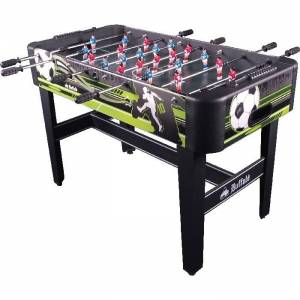

Stalai transformeriai - YKAbaldai.lt
Baldų pristatymas
info@ykabaldai.lt
+37065397031 Skambinti 00.00€
Jūsų krepšelis tuščias! Svarbi informacija
Apie MUS
Pirkimo sąlygos
Kontaktai
+370 653 97031 Baldai
Minkšti
Minkšti kampai Sofos lovos Foteliai Pufai Minkštų baldų komplektai Miegami foteliai
Svetainė
Sekcijos Komodos Spintos Žurnaliniai staliukai Valgomojo stalai Stalai transformeriai Valgomojo kėdės TV staliukai komodos Indaujos Klasikiniai baldai
Miegamasis
Komplektai Lovos Spintos Komodos Spintelės Veidrodžiai Tualetiniai staliukai